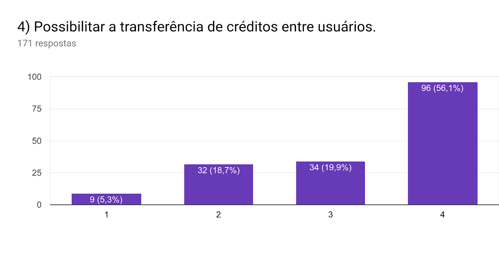

Nossa proposta é desenvolver um Protótipo de Alta Fidelidade para um Sistema de Gestão de Créditos do Restaurante Universitário. Nessa primeira etapa, foram aplicados duas metodologias de pesquisa: questionário e entrevista. Com isso, foi possível levantar dados precisos sobre preferências do usuário com relação às features propostas.
Foram propostos 8 features para o sistema de gestão de créditos do Restaurante Universitário. Por meio no questionário online, foi possível captar a recepção dos usuários com essas features.
Ao todo, 171 pessoas responderam o questionário até a data da apresentação. Com base nesses dados foi possível selecionar as features mais desejadas pelos usuários.
Das features selecionadas, 7 de 8 receberam mais de 50% de total aprovação, variando entre 52,6% a 95,9%, com somente uma com total aprovação de 33,3%, a de agendamento de compras.
Essa mesma feature recepeu a maior negatividade, obtendo uma avaliação de total ou parcialmente não aprovada por 43,9% dos usuários que responderam, por esse motivo essa proposta foi removida do escopo de implementação do protótipo.
Como uma segunda forma de avaliação das opiniões dos usuários sobre a utilização da aplicação em desenvolvimento, cada integrante do grupo se tornou responsável por entrevistar três pessoas, possíveis usuários da aplicação, a fim de coletar suas opiniões sobre a mesma.
Para uma maior variabilidade das opiniões coletadas, foram entrevistados alunos de diferentes cursos do campus e até mesmo docentes, de forma que não houvesse nenhum viés de pessoas de áreas correlatas.